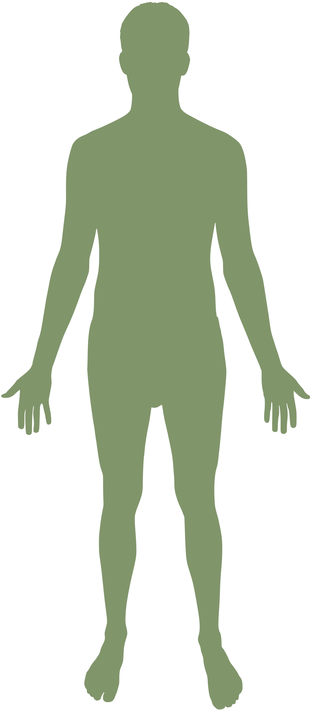

LISTEN TO YOUR BODY
从疼痛的位置，了解身体的信号。
选择不适部位，了解常见运动损伤的表现与诱因。
01 选择疼痛部位02 对照位置与表现03 了解诱因与就医提示
哪里感到不舒服？
点击圆点选择正面 · 示意图图中区域仅供定位参考

可选部位当前选择
EXPLORE THE AREA
ⓘ
相似的疼痛可能有不同原因。以下为常见情况举例，不能凭疼痛位置确定病症，也不能排除骨折等其他损伤。
!
这些信号，值得立即重视
立即急诊：肢体明显变形、麻木或发凉变色，或伴胸痛、呼吸困难。
尽快就医：无法负重或正常使用肢体、肿胀迅速加重、关节红热伴发热。疼痛持续、反复或逐渐加重，也应预约骨科或运动医学评估。